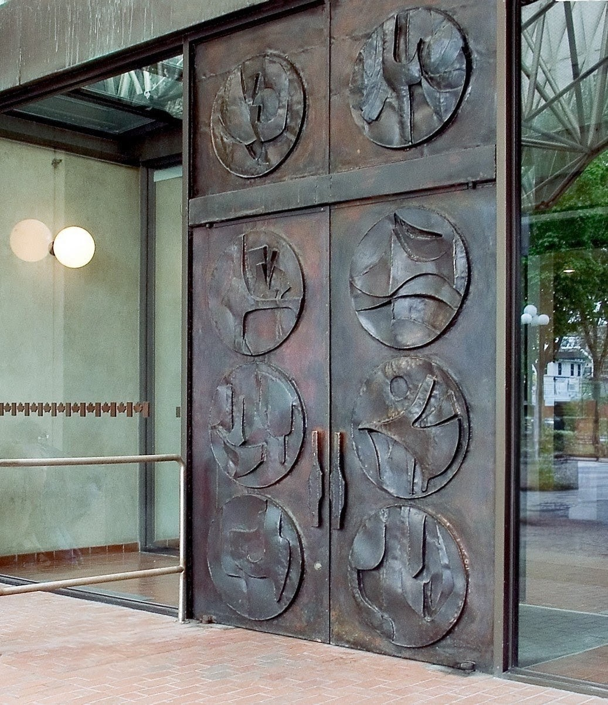
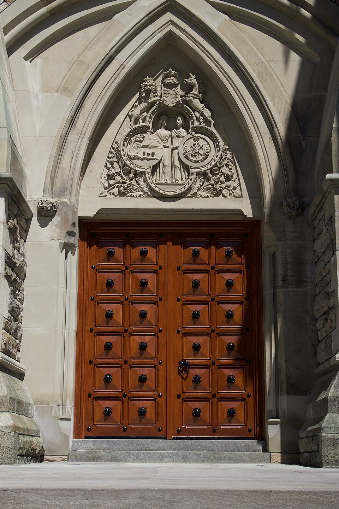
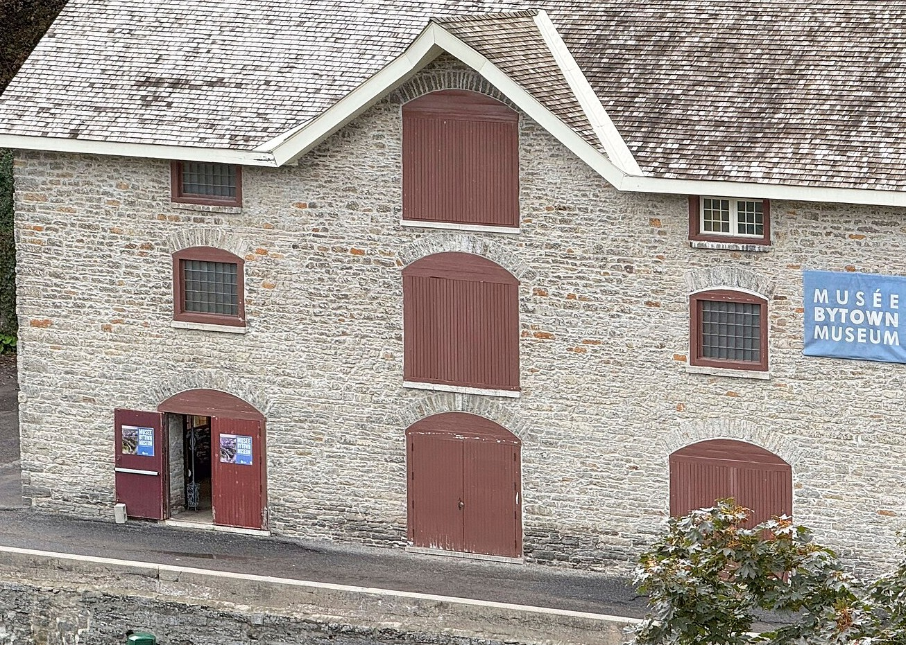
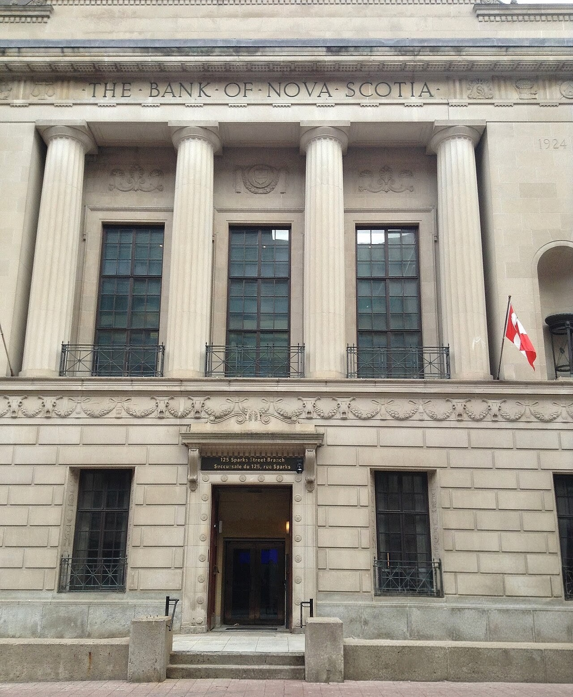
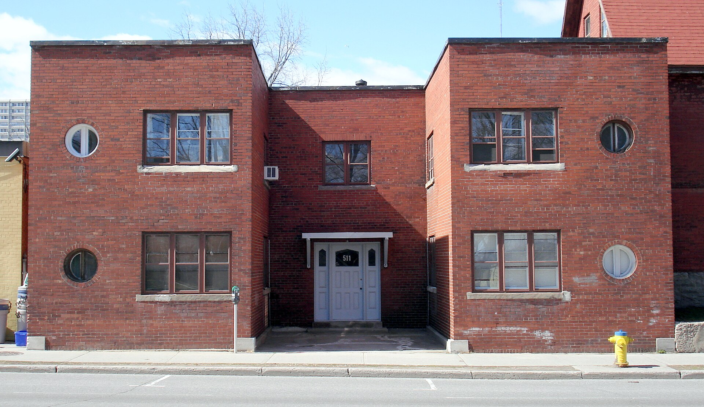

There is more than one way into a city.

Nearly twenty feet of bronze, hammered by hand. The doors at the south entrance of the Senate of Canada Building — for half a century Ottawa’s Union Station — were made in 1973 by the Ottawa sculptor Bruce Garner, who titled the work Reflections of Canada. Eight roundels spread across the two leaves, abstracted landscapes and animals standing in for the regions of the country.
Garner sized them for an audience. They went in that spring, ahead of a Commonwealth summit; in July the Queen stopped to look, and two days later twenty-four heads of government passed through them on the way to a meeting on nuclear testing. They were built to be walked through by people arriving to decide something. The entrance behind them is not, as a rule, open to the public.

East Block went up before the country did. Work began in 1859, eight years before Confederation, to a design by Thomas Stent and Augustus Laver: pointed arches, Nepean sandstone, timber set deep in the wall.
The manner was borrowed from the Palace of Westminster, newly rebuilt in London — which is another way of saying the architects were answering a question that had no local answer yet. What should a Canadian government look like? There was no precedent to copy, so they built the appearance of permanence first and let the institution move in afterward.
The doors are heavy the way the whole building is heavy, on purpose, as an argument about the seriousness of what happens behind them. It remains one of only two buildings on the Hill still largely as it was first built.

The oldest door here opened onto sacks and barrels. The Commissariat Building was finished in 1827, a storehouse for the crews digging the Rideau Canal, and it is still the oldest stone building in Ottawa — though there was no Ottawa then, only Bytown, and barely that.
The Royal Engineers built it plain: three storeys of local limestone, walls two and a half feet thick, a supply door on every level. Behind the ground-floor entrance sat the vault — black powder, rations, and the money to pay the men. Nobody was meant to be impressed. The door had a job, which was to let necessary things in and out and keep the rest locked up.
That the canal was begun at this spot is the reason the city exists at all. The building makes no claim about it.

A bank has to look like it will still be there tomorrow. That is most of what the entrance at 125 Sparks Street was designed to say. John M. Lyle finished it in 1925 in a severe classical order — sandstone, a carved frieze worked with Canadian motifs, a door of mahogany and bronze — the most disciplined building he ever made.
None of it was required to hold money; a plainer vault would have done. The columns and the stonework were there to persuade, in the years when a person deciding where to keep their savings had little to go on but the face a building showed the street. The argument was solvency, dressed as permanence.
It held until it didn’t. The bank left in the 1980s, and the building now keeps part of the collection of the Library of Parliament.

This one you would walk past. Two storeys of brick on Somerset Street West, a few small round windows, a Beer Store next door and a park across the road. It went up in the early 1940s, after a fire took the row that had stood there, and it has changed very little since. Nothing about it asks to be looked at.
On the evening of 5 September 1945, a cipher clerk from the Soviet embassy named Igor Gouzenko came home to apartment 4 carrying a hundred and nine documents he had taken from the embassy files. For two days no one — not the newspaper, not the Minister of Justice’s office — would take them from him. On the second night, while men from the embassy searched his apartment, Gouzenko and his family waited in a neighbour’s rooms across the hall.
The papers set out a Soviet spy network operating inside Canada, the United States and Britain — against countries that had, weeks earlier, been allies. Historians tend to date the public beginning of the Cold War to that week, and to this address.
There is a plaque, but it is across the street, in the park where the police kept watch that night. The door has none. You could stand in front of it tomorrow, knowing everything that happened behind it, and the brick would still tell you nothing at all.